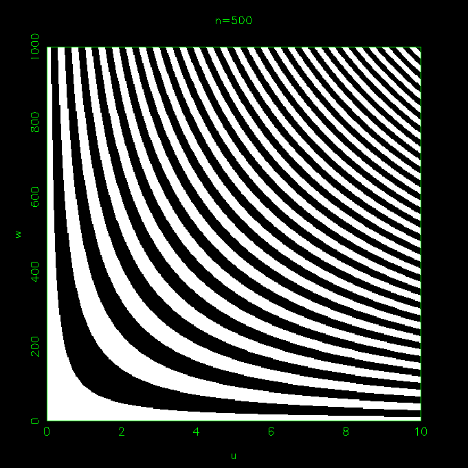
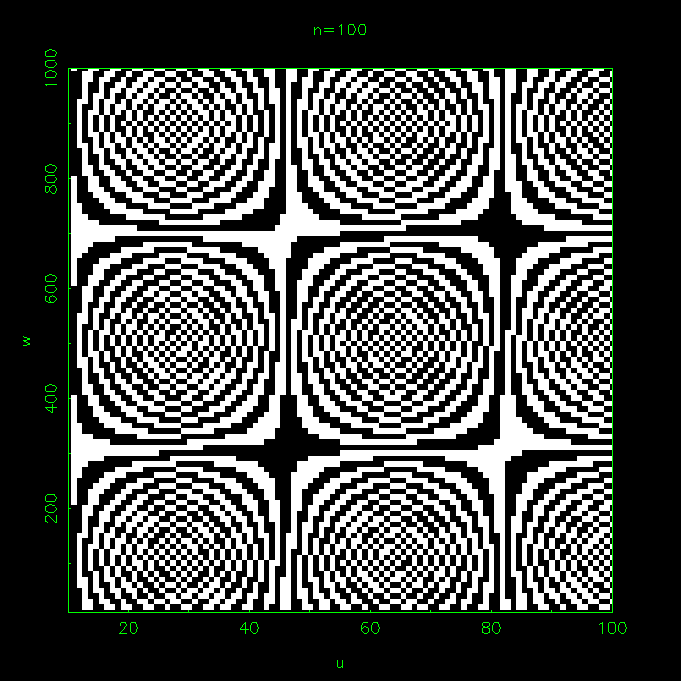
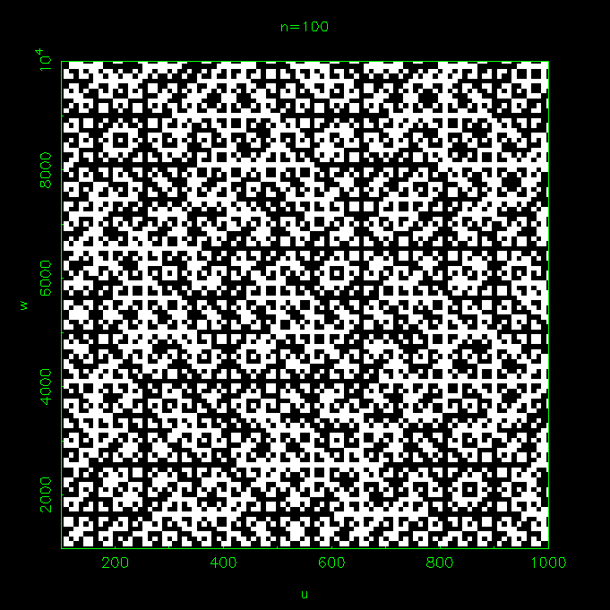
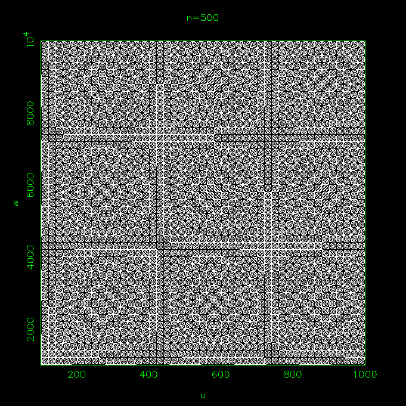
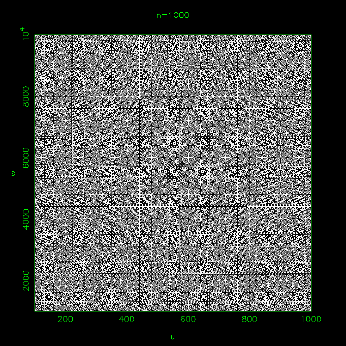
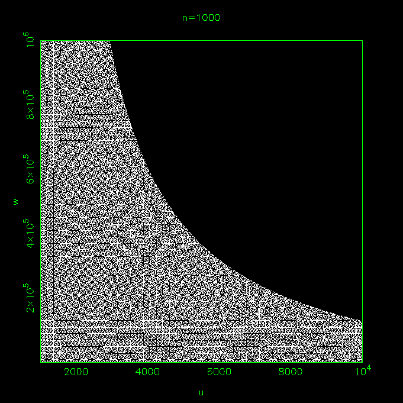

In general, it is believed that the outcome of a coin tossing experiment is uncertain although there is no factor of uncertainty (quantum, statistical etc.) in the equation of motion of the coin. In what follows, I will show that it is the very high sensitivity of the final state (H & T) on the initial conditions (initial linear and angular speeds) which makes the prediction of the coin tossing experiment difficult but not impossible ! In fact the coin tossing experiment belongs to a large class of problems in non-linear physics in which a small change in the initial conditions can lead a very large change in the final outcome. I will also show that in the case of coin tossing the two dimensional space of the controlling parameters (the initial linear velocity 'u' and angular velocity 'w' of the coin) gets fragmented into two different type of basins (leading to H or T) separated by fractal boundaries. Before going into detail let me tell what are the interesting things in this exercise.
Whether a coin will end up with head (H) or tail (T) up depends on the velocities of angular motion 'w' (about an axis parallel to horizontal) and linear motion 'u' (along the vertical direction). This is the angular motion which can change the state of the coin and this is the linear motion which provides time for the state to change. The total time available for motion is 2u/g, where 'g' is the gravitational acceleration. The final orientation of the coin (theta) is the product of 2u/g and w. On the basis of whether theta is between 0 and 180 degree or between 180 degree and 360 degree we can call the final state H or T.
The motion of the coin can be easily simulated on a computer with the help of a small program in which the angular and linear positions of the coin are evolved with time. Since the computational load is very small, the simulation can be carried out in real time, in the sense the motion of the coin can be shown on a screen for every integration time step.
Space of controlling parameters u and w
|
 |
 |
|
 |
 |
|
 |
 |
Fig 1: In these figures the position of a pixel represents a set of linear velocity (u) and angular velocity (w) and its color shows either the set will lead head or tail. In every figure different range of u and w and different number of pixels are used.
If you want to know more about this experiment please let me know.
If you have understood the problem and are ready for a quick test click on the right answers
Only on the initial angular velocity.
Only on the initial linear velocity.
On both type of velocities.
The mass and size of the coin.
The white area will increase.
The white are will shrink.
The pattern will become finer.
None will happen.
The white area will increase.
The white are will shrink.
Both areas will shrink.
Nothing will happen.
The boundaries will become smoother.
We will get more number of big boxes (which are 9 at present).
We will get less number of big boxes.
Nothing will happen.
I will be adding my notes very shown. However, for time being read it here